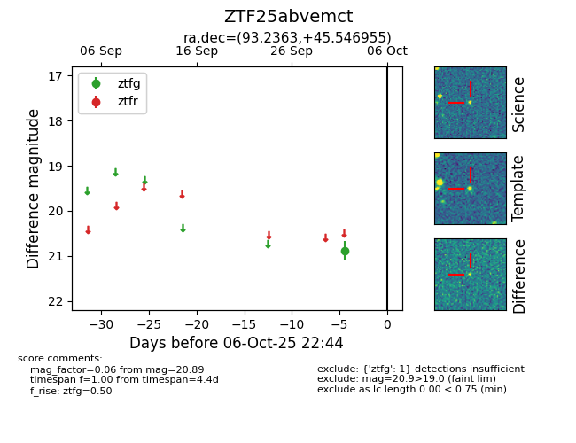

FINK: ZTF25abvemct
Lasair: ZTF25abvemct
ALeRCE: ZTF25abvemct
ZTF25abvemct (ztf,fink)
equatorial (ra, dec) = (93.2363,+45.54695)
galactic (l, b) = (168.0063,+12.78538)

last ztfg=20.89
1 ztfg detections